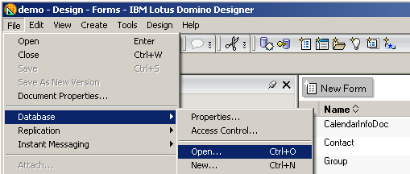
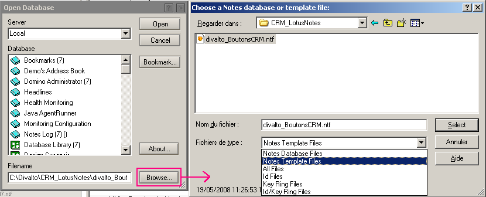
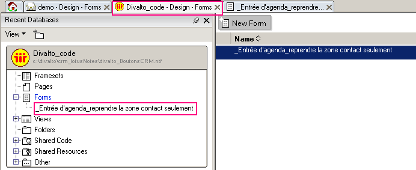
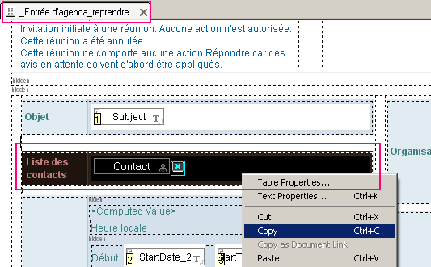
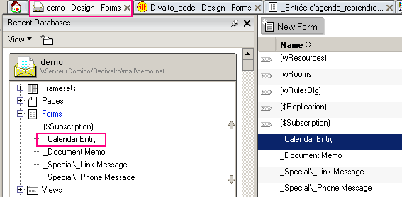
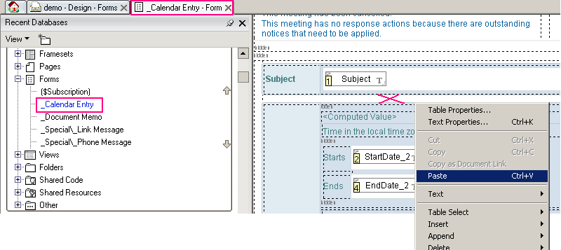
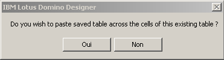

Le masque standard des rendez-vous de Lotus Notes peut être modifié pour lui ajouter un accès à la liste des contacts (fonctionnalité non inclue en standard dans Lotus -alors qu'elle l'est dans Outlook- et intégrée à la CRM de Divalto).
A cet effet, un modèle de la portion de masque écran à ajouter au masque des rendez-vous de Lotus est livré dans le fichier modèle (Notes Template file) Divalto_BoutonsCRM.ntf (situé dans le répertoire \Divalto\CRM_LotusNotes ou \Har\CRM_LotusNotes en version 5 de Divalto). Les copies d'écran suivantes (en version anglaise) montrent comment copier ce bout de masque puis le coller dans le masque Lotus.
Après avoir lancé LotusNotes Designer et chargé la base du client :
Ouverture de la base Divalto_BoutonsCRM.ntf


Copie de l'objet "Liste des contacts"


Coller de l'objet "Liste des contacts" dans le masque des rendez-vous


A la fin de la copie, répondre Non à la question de Lotus Notes Designer :

Enfin, sauvez le masque modifié.